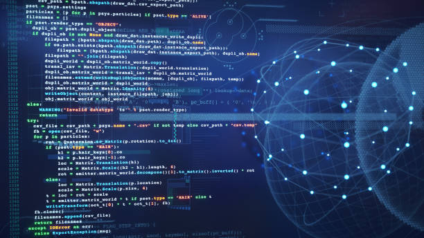
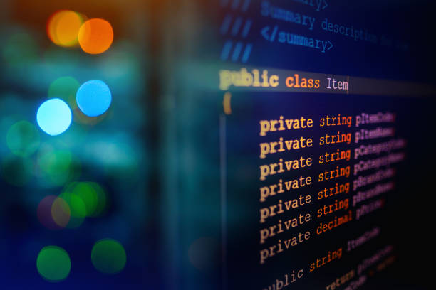
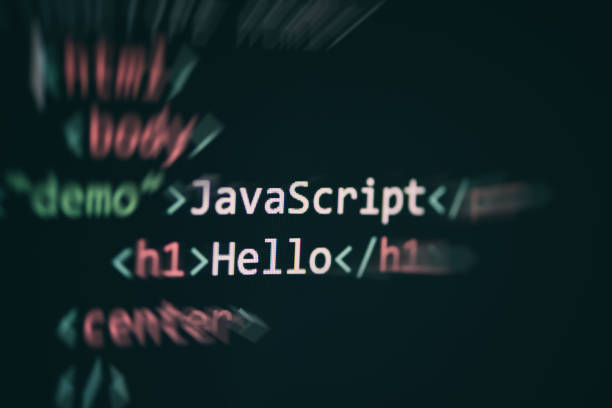

O HTML5 é a versão mais recente do HTML. Ele começou a ser desenvolvido em 2006,
a partir de uma união entre o grupo WHATWG (Web Hipertext Application Tecnology Working Group),
formado por desenvolvedores de empresas como Mozilla, Apple e Opera, e o W3C (World Wide Web Consortium),
um consórcio liderado por Tim Berners-Lee, o desenvolvedor original do HTML.
Os motivos que levaram à nova versão foram os fatos de o HTML4 (versão essa que você aprendeu nas aulas anteriores),
não trazer uma boa semântica (significado) para o código e não ajudar o CSS na formatação do mesmo.
Para melhorar isso, o HTML5 desenvolveu novas tags e alterou a colocação de outras.
Agora, existe uma tag específica para cada parte da página, por exemplo, cabeçalho, rodapé, menu de navegação, etc.
O HTML5 e o CSS3 estão sendo desenvolvidos em módulos. Isso significa que você não precisa esperar que todo o padrão
dessas novas versões seja criado para poder usá-las. Porém, você deve estar sempre atento às atualizações do W3C,
que é o consórcio responsável por cuidar das especificações do HTML.
Um desenvolvedor web deve acessar constantemente o site desse consórcio,
pois ele é a base de tudo para criar páginas da internet.
O PHP (Hypertext Preprocessor) é uma linguagem de programação de código aberto
amplamente utilizada para o desenvolvimento web. Ela é executada no lado do servidor e é especialmente
projetada para criar páginas web dinâmicas e interativas, permitindo a geração de conteúdo dinâmico
e comunicação com bancos de dados.
Sua sintaxe é simples e flexível, tornando-a uma escolha popular
para desenvolvedores web devido à facilidade de uso e à grande base de usuários e comunidade ativa.
O PHP é gratuito e pode ser embutido em documentos HTML, facilitando a criação de aplicativos e sites dinâmicos.
Java é uma linguagem de programação de alto nível e orientada a objetos,
desenvolvida pela Sun Microsystems (agora pertencente à Oracle Corporation). Ela foi projetada para ser portátil,
ou seja, pode ser executada em diferentes plataformas sem a necessidade de recompilação.
Java ganhou popularidade principalmente devido à sua capacidade de "escrever uma vez, executar em qualquer lugar"
(escrever uma vez, executar em qualquer lugar), tornando-se o ideal para o desenvolvimento de aplicativos multiplataforma.
C# (pronuncia-se "C Sharp") é uma linguagem de programação moderna,
orientada a objetos e desenvolvida pela Microsoft como parte da plataforma .NET.
Ela foi lançada em 2000 e é projetada para ser segura, eficiente e fácil de usar.
C# é amplamente utilizado para desenvolvimento de aplicativos Windows, jogos, aplicativos empresariais e serviços web.
C# é uma linguagem popular entre desenvolvedores, especialmente na comunidade Microsoft e no desenvolvimento de software
para a plataforma Windows. Ela continua evoluindo com novas versões e recursos, tornando-a uma escolha poderosa
para diversos cenários de desenvolvimento de software.
Python é uma linguagem de programação de alto nível, interpretada e de código aberto,
criada por Guido van Rossum e lançada em 1991. Ela é conhecida por sua simplicidade, legibilidade e facilidade de uso,
o que a torna uma excelente escolha para iniciantes e programadores experimentou.
Python possui uma sintaxe clara e concisa, permitindo que os desenvolvedores escrevam menos código para realizar tarefas complexas.
Python é uma das linguagens de programação mais populares no mundo da computação, impulsionada por sua versatilidade,
comunidade ativa e vasto suporte em diversas áreas de aplicação. Sua facilidade de aprendizado e a ampla gama de bibliotecas disponíveis
tornam uma escolha popular para uma variedade de projetos e desenvolvedores.
C++ é uma linguagem de programação de alto nível, orientada a objetos e de propósito geral.
Criada por Bjarne Stroustrup em 1985, é uma extensão da linguagem de programação C, acrescentando recursos
de orientação a objetos, como classes e herança, além de melhorias em outros aspectos da linguagem.
C++ é uma linguagem poderosa e diversificada, amplamente adotada por desenvolvedores que desejam aproveitar
os benefícios da orientação a objetos e o controle de baixo nível da linguagem, combinados com a compatibilidade com C e alta eficiência.
Sua ampla utilização e suporte ativo tornam C++ uma escolha sólida para muitos cenários de desenvolvimento.
SQL (Structured Query Language) é uma linguagem de consulta estruturada usada para
interagir com bancos de dados relacionais. Foi desenvolvido na década de 1970 e é amplamente utilizado para armazenar,
manipular e recuperar dados em sistemas de gerenciamento de banco de dados (DBMS).
SQL é uma habilidade essencial para desenvolvedores, analistas de dados e administradores de banco de dados
que trabalham com sistemas de gerenciamento de banco de dados relacionais, como MySQL, PostgreSQL, Oracle, Microsoft SQL Server, entre outros.
O conhecimento em SQL permite manipular e consultar dados de forma eficiente
e é uma base fundamental para trabalhar com bancos de dados em aplicações e sistemas empresariais.
JavaScript é uma linguagem de programação de alto nível, nível e interpretada,
usada principalmente para desenvolvimento web. Ela foi criada originalmente por Brendan Eich em 1995
e se tornou uma das linguagens de programação mais populares na construção de páginas web interativas e dinâmicas.
JavaScript é uma ferramenta essencial para a criação de aplicações web modernas e interativas.
Com a evolução contínua e o suporte ativo da comunidade, o JavaScript continua desempenhando um papel fundamental
na transformação da experiência do usuário na web.